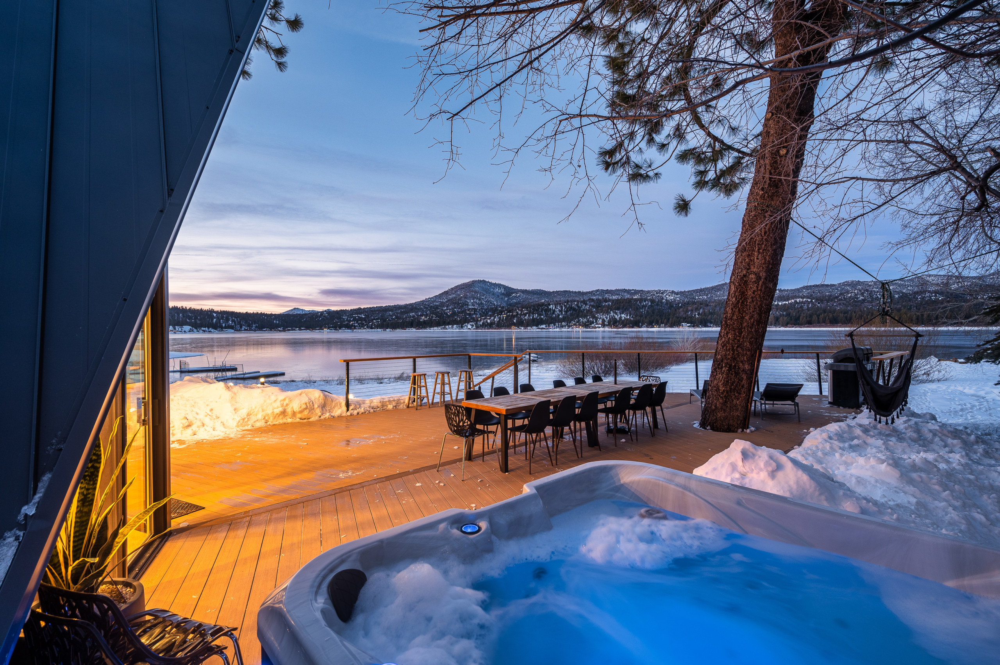
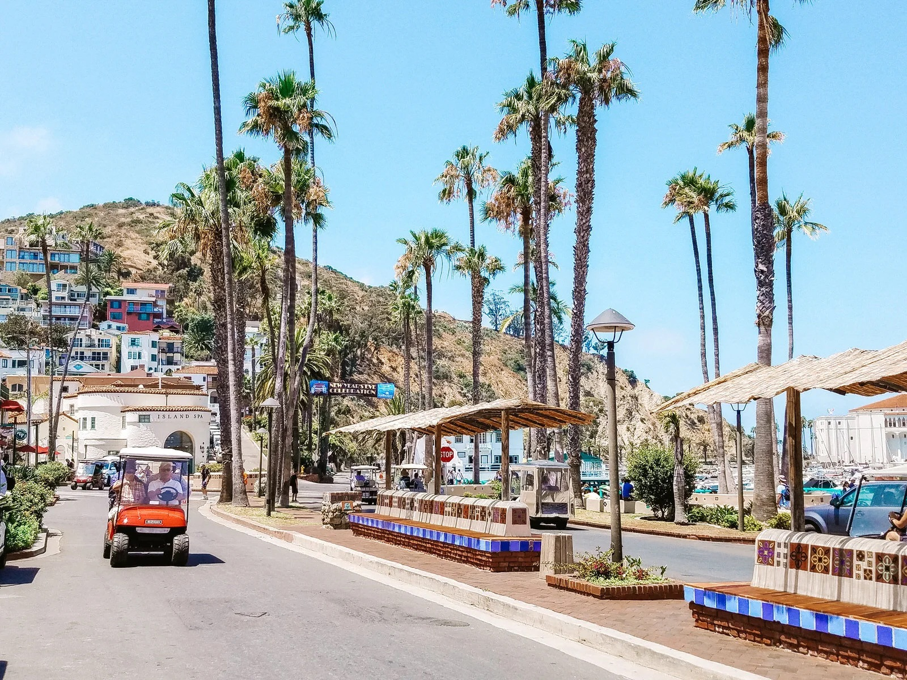
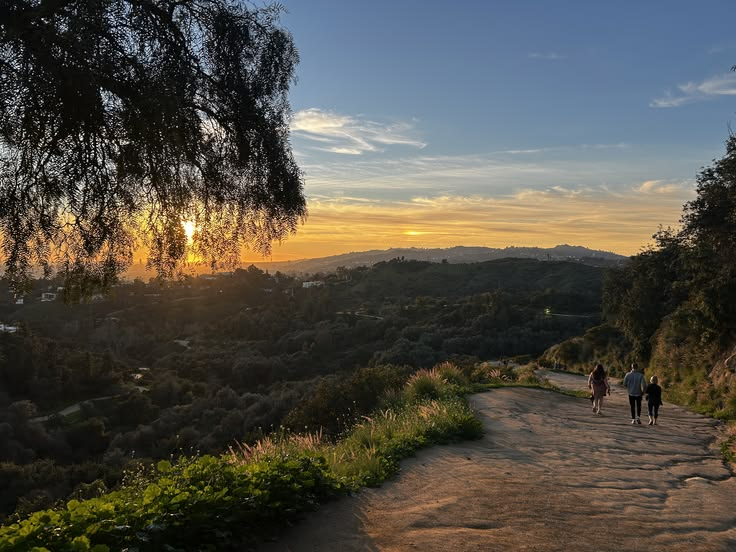

06 / little things i've kept
somewhere outside
some places just stick with you

big bear
catalina island
somewhere on a trailclick on a photo to read a little more
06 / little things i've kept
some places just stick with you

big bear
catalina island
somewhere on a trailclick on a photo to read a little more
a little memory...